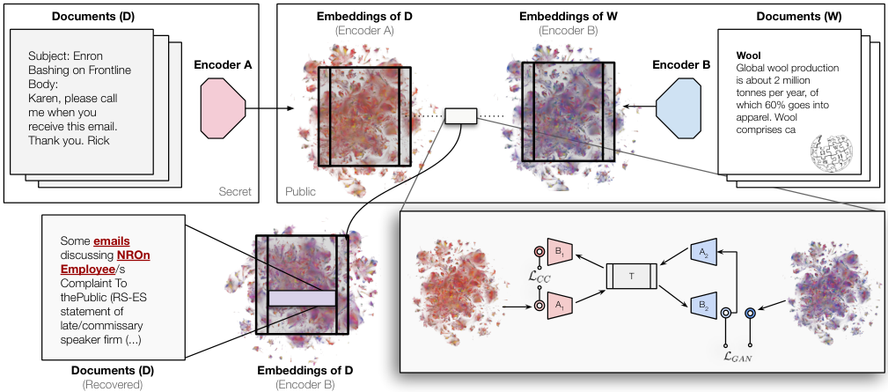
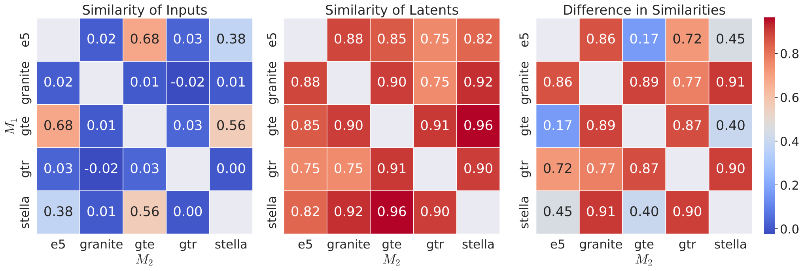
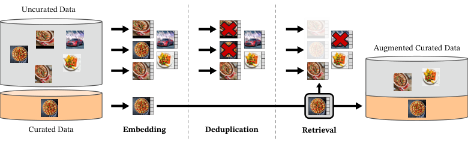
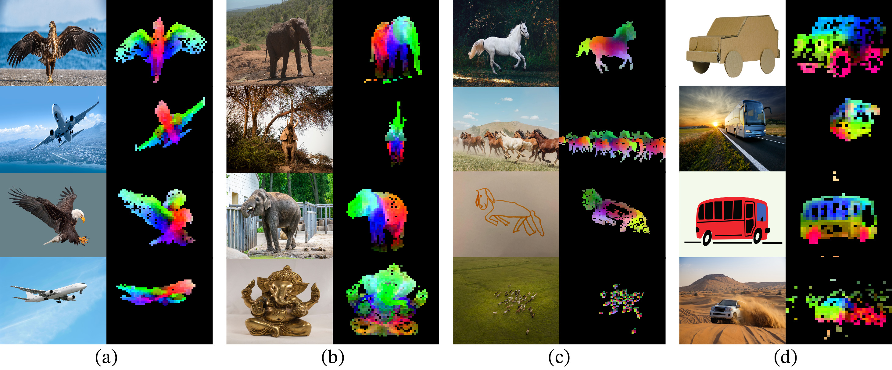
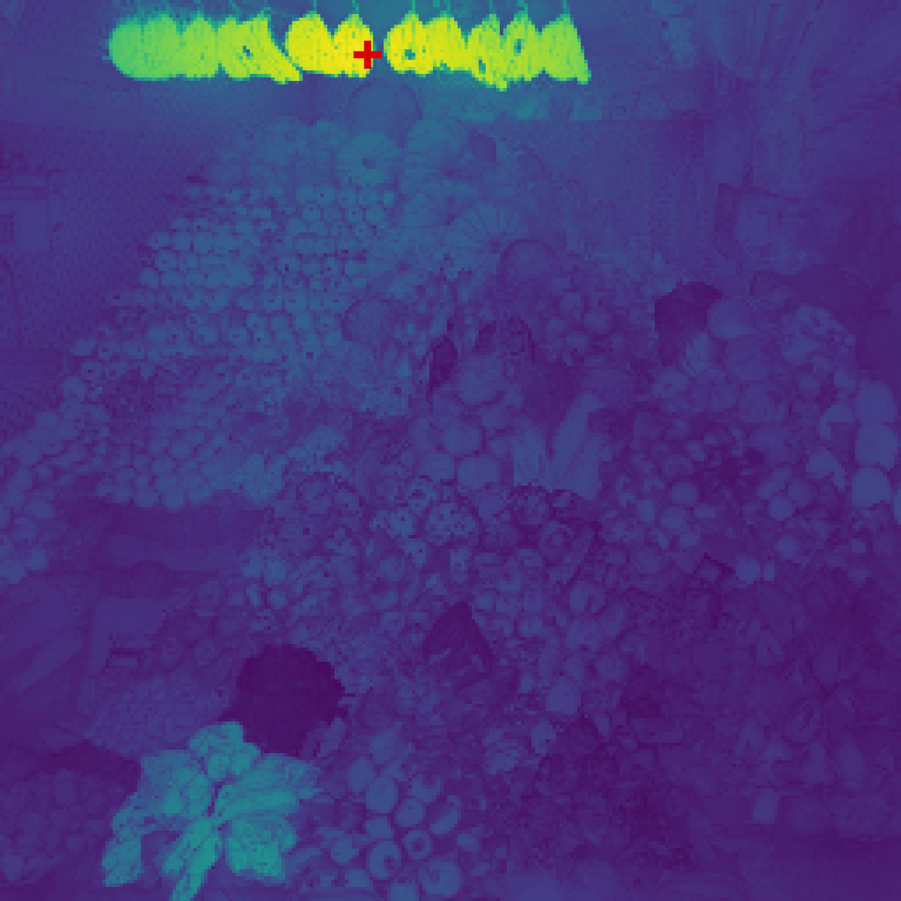
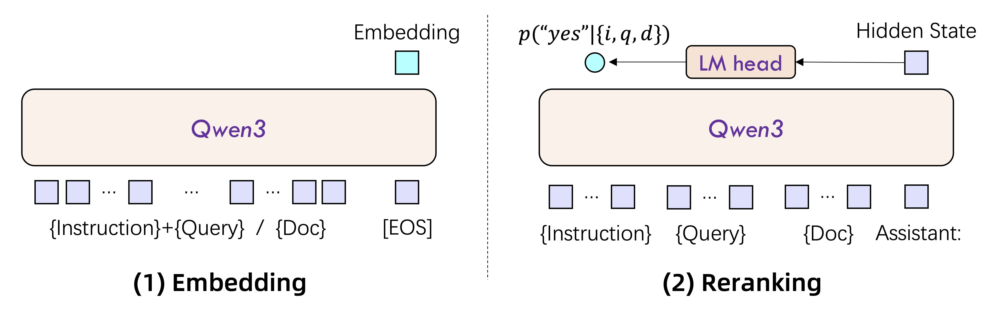
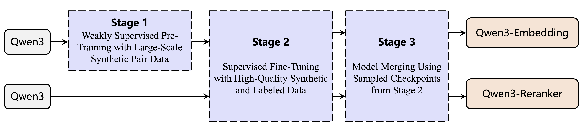
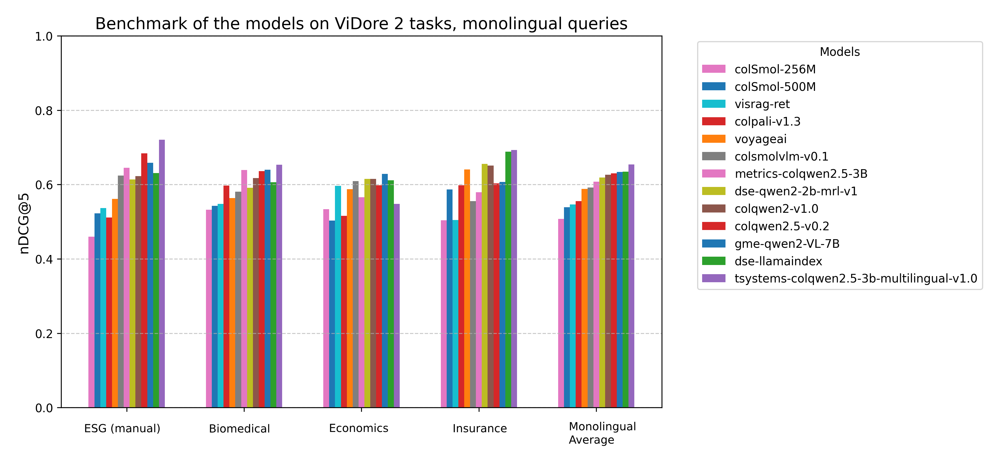

前沿短深读集合：Late Chunking / Vec2Vec / ModernBERT / DINOv2+v3 / Qwen3-Embedding / Seed1.5-Embedding / ViDoRe v2¶
paper（按小节顺序）：Late Chunking (Jina AI 2024) · Vec2Vec (Cornell 2025, NeurIPS 2025) · ModernBERT (Answer.AI + LightOn 2024) · DINOv2 (Meta 2023, TMLR 2024) · DINOv3 (Meta 2025) · Qwen3-Embedding (Alibaba 2025) · Seed1.5-Embedding (ByteDance 2025 blog) · ViDoRe v2 (Illuin 2025)
本文定位：把 2024–2025 年7 个方向性单点用短深读格式一次讲清——每个 2–4k 字，专注新点子 + 关键实验 + 与已有工作的关系，不铺陈完整训练细节。目的：读完能判断「这些前沿是否值得进入自己的技术栈」。
本文覆盖的是主流冲榜路线之外的方向：分块与推理侧优化（Late Chunking）、跨模型表示对齐（Vec2Vec）、encoder 基础设施升级（ModernBERT）、纯视觉自监督（DINOv2/v3）、2025 年新一代 LLM-Emb（Qwen3、Seed1.5）、新一代视觉文档评测（ViDoRe v2）。
Late Chunking：把切分放到 Transformer 之后¶
paper：Late Chunking: Contextual Chunk Embeddings Using Long-Context Embedding Models (Jina AI, 2024-09) · Jina 官方博客解读 backbone：任何长上下文 embedding 模型（Jina-embeddings-v2 8K / Jina-embeddings-v3 8K / Nomic-Embed 8K / BGE-M3 8K） contribution：免训练可用；同时提出配套的对比训练方案（可选，进一步涨分）
问题：Naive chunking 的语义缺失¶
传统做法：把长文档切成 N 个小 chunk（512 token 或按句子/段落）→ 每个 chunk 独立走 embedding model 编码 → 存入向量库。
问题：一旦切了，chunk 里的指代、上下文实体就丢了。例：一篇 Berlin 的 Wikipedia 文章，被切成 3 chunk：
- Chunk 1：
Berlin is the capital and largest city of Germany... - Chunk 2：
Its more than 3.85 million inhabitants... - Chunk 3：
The city is also one of the states of Germany...
Chunk 2/3 里的 "Its" / "The city" 都指向 Berlin，但独立编码时模型不知道，导致检索时"Berlin" query 与 chunk 2/3 的相似度显著低。
方法：Encode → Chunk → Pool¶
Late Chunking 把顺序反过来：先 encode 整个长文档（得到 token embedding 序列），然后切分，最后各 chunk 单独 mean-pool：
Naive: [chunk1] → encoder → mean pool → emb1
[chunk2] → encoder → mean pool → emb2
...
Late: [full doc] → encoder → [tok emb 序列]
→ split into chunks → mean pool each → emb1, emb2, ...

关键洞察：Transformer 的每个 token embedding 已经吸收了整个文档的上下文（因为 self-attention），所以在 pool 之前切分不会丢上下文——chunk 2 的每个 token 都"知道自己在讲 Berlin"。
关键数据¶
Berlin 例子的余弦相似度对比：
| Chunk 内容 | Naive sim | Late sim |
|---|---|---|
| "Berlin is the capital and largest city of Germany..." | 0.8486 | 0.8495 |
| "Its more than 3.85 million inhabitants..." | 0.7084 | 0.8249 |
| "The city is also one of the states of Germany..." | 0.7535 | 0.8498 |
Naive 里 chunk 2/3 相对 chunk 1 掉 10 分，Late 全部持平。"Its" 与 "The city" 在 Late 版里成功继承了 Berlin 的语义。
BEIR 消融¶

- chunk_size ∈ [64, 256] 是甜点区间：naive 效果差、late 明显涨。
- chunk_size 到 512+：naive 追上——因为每个 chunk 本身已经够长、上下文丢失不明显。
- 平均 nDCG@10 涨幅：
0.53%–7.5%分数据集变化；HotpotQA 类多跳最受益，SciFact 类精短事实基本持平。
长文档扩展：Long Late Chunking¶
上面的做法需要文档能整体过 encoder（8K 上下文限制）。文档更长时怎么办？Jina 提出「重叠窗口 late chunking」：

- 用滑动窗口（例：8K 窗口，2K 步长）多次 encode。
- 每个 token 会被多个窗口 encode 到不同的 embedding。
- 对同一 token 取中心窗口的 embedding（离窗口边缘远的 token 上下文最全）。
- 再做 chunk 切分与 pool。
何时用¶
推荐场景：
- RAG 长文档索引，chunk_size = 128–256（很多 RAG 系统默认值）。
- 文档内多次指代/主语省略（法律文书、科技论文、Wiki 类）。
- 已有长上下文 embedding 模型（Jina v2/v3、Nomic、BGE-M3）。
不推荐：
- chunk 已经很长（> 512）→ 收益微。
- 短查询 → 短 chunk 的 STS 类任务（naive 就够）。
- 不支持 8K+ 上下文的老 embedder（BERT-base 512）。
Anthropic 2024 也发过 Contextual Retrieval，思路类似（用 LLM 为每个 chunk 生成上下文描述再嵌入）。Late Chunking 是"免训练"版本，Contextual Retrieval 是"LLM 增强版"，两者不冲突可以叠加。
Vec2Vec：跨模型表示无监督对齐¶
paper：Harnessing the Universal Geometry of Embeddings (NeurIPS 2025) code：rjha18/vec2vec（Cornell） contribution：首个无 paired 数据的 embedding 空间翻译方法——用 GAN + cycle consistency 学出「跨模型的通用潜空间」
问题：换 embedding 模型 = 重建索引¶
想象一个场景：向量库存了 1 亿条 doc 的 BGE-large 向量；现在想换成 NV-Embed-v2。只能重跑 1 亿次 forward 重建索引——每次换 embedder 都是这种代价。
Vec2Vec 想问：可不可以只有向量、没有原文档，就把「A 模型的向量」翻译成「B 模型的向量」？
理论根据：Strong Platonic Representation Hypothesis（作者提出的强化版）——不同 encoder 训在同一模态（文本）上，尽管架构、数据、参数量不同，最终 embedding 空间收敛到同一潜在几何。因此存在一个通用潜空间，各家 embedder 的向量都能翻译进出。
方法：GAN + Cycle Consistency¶

给定两组没有配对的 embedding：\(\{u_i\} = M_1(D_1)\)（未知 encoder A 编码文档集 \(D_1\)）和 \(\{v_j\} = M_2(D_2)\)（已知 encoder B 编码文档集 \(D_2\)）。\(D_1 \cap D_2 = \emptyset\)——两组文档完全不同。
Vec2Vec 学两个 adapter：
- \(A_1: \text{Space}_1 \rightarrow \mathcal{T}\)（把 M1 空间投到共享潜空间 \(\mathcal{T}\)）
- \(B_1: \text{Space}_2 \rightarrow \mathcal{T}\)
- \(A_2: \mathcal{T} \rightarrow \text{Space}_1\)
- \(B_2: \mathcal{T} \rightarrow \text{Space}_2\)
用三个损失联合训练：
- Adversarial loss：GAN 判别器让 \(A_1(u)\) 和 \(B_1(v)\) 在 \(\mathcal{T}\) 中分布不可区分。
- Cycle consistency：\(A_2(A_1(u)) \approx u\) 且 \(B_2(B_1(v)) \approx v\)（翻译回来要不变）。
- Vector space preservation：\(A_1(u_1) - A_1(u_2)\) 与 \(u_1 - u_2\) 的关系保持。
推理：给一个未知 M1 生成的向量 \(u\)，用 \(B_2(A_1(u))\) 就能得到 M2 空间下的等价向量。
关键结果¶

作者跨 5 个 embedder 模型对（GTR-T5 / GTE-base 等）验证：
- 翻译向量与真实 B 模型向量的余弦相似度：高至 0.96。
- 8000+ shuffled embeddings 的匹配准确率：几乎 100%（模型能"猜出"每个向量翻译过来对应哪一个）。

上图论文 Figure 4：对角线（同一文档在两个模型下的翻译对应）明显更亮——翻译不是随机映射，而是恢复了真正的语义匹配。
安全含义（论文主要卖点）¶
Vec2Vec 的一个直接后果是向量数据库不再安全：
- 攻击者拿到未知 embedder 的向量库 dump。
- 用一批公开文档跑自己已知 encoder 得到 \(\{v_j\}\)。
- Vec2Vec 训一个从未知空间到已知空间的翻译。
- 翻译后可以用 Text Embedding Inversion 等技术反推原文档。
论文实测反推的 Enron email dataset：成功恢复关键实体（人名、邮件主题）。这告诉工业界：向量库要像加密数据库一样保护，不能只当作"无法反推的哈希"。
对 embedding 工程的启示¶
正向用法：
- 换模型不重建索引：训一个 Vec2Vec 把老向量库翻译到新模型空间。
- 多模型 ensemble：把不同 embedder 的向量投到共享潜空间做投票。
- 私有 embedder 到公有 API 的迁移（合规/成本考虑）。
反向警示：
- 不要把 embedding 当加密向量存储。
- 想不泄露语义，只能不存 embedding——或者加同态噪声（HE-Embedding 系工作）。
ModernBERT：新一代 BERT 基础设施¶
paper：Smarter, Better, Faster, Longer: A Modern Bidirectional Encoder (2024-12) code / weights：HuggingFace/answerdotai/ModernBERT · answerdotai/ModernBERT backbone：ModernBERT-base 149M / ModernBERT-large 395M contribution：BERT 骨干 6 年首次 Pareto 改进——2T token 预训练、8K 原生上下文、RoPE + FlashAttention + Alternating Attention
问题：BERT 已经 6 年没升级¶
BERT (2018) 的架构组合：512 上下文 + Absolute Position + 常规 self-attention + WordPiece 30k vocab。到 2024 年这些每一项都过时了：
- 512 上下文太短，长文档要截断。
- Absolute position 无法外推到未训练长度。
- 常规 attention 慢；FlashAttention / SwiGLU / GLU 已成 LLM 标配。
- WordPiece 30k 词表小，多语差。
BERT 依然是生产 embedding 的主力骨干（bge-large / e5-base / gte-large / SBERT），需要「工业升级版」。
方法：把 LLM 领域的现代技术套回 encoder¶
ModernBERT 引入的现代技术组合：
| 组件 | 原 BERT | ModernBERT |
|---|---|---|
| Position enc. | Absolute (learned) | RoPE（旋转位置编码） |
| Attention 实现 | 常规 self-attn | FlashAttention 2 |
| 注意力模式 | 全局 | Alternating（层间交替 global / local 3:1） |
| Activation | GELU | GeGLU（Gated GeLU Linear Unit） |
| Norm | LayerNorm | RMSNorm（更简单更稳定） |
| Vocab | 30k WordPiece | 50k BPE（多语更好） |
| 最大上下文 | 512 | 8192 原生 |
| 预训练量 | 3.3B token | 2 T token |
| 训练数据 | Wiki + Books | 混合 web / code / academic |
| Dropout | 0.1 | 0（现代化 - fully saturated） |
Alternating Attention：论文最工程化的一点——每 3 层「local attention」（128 token 窗口）+ 1 层「global attention」。这让长序列计算量从 \(O(L^2)\) 大幅降到 \(O(L \cdot W)\)（\(W=128\)），但通过每 4 层的 global attention 保证信息全局流动。
关键实验¶
- GLUE Avg：ModernBERT-base 88.4（vs BERT-base 79.6, DeBERTa-v3-base 89.0）——大幅追上 DeBERTa。
- BEIR Retrieval (fine-tuned)：ModernBERT-large 56.4（vs BERT-large 55.2, DeBERTa-v3-large 55.0）。
- Long context (2K–8K)：base 版推理吞吐 4× 于 BERT-base（FlashAttention + Alternating）。
- Code embedding（CodeSearchNet）：ModernBERT-base 85.8（vs BERT 78.3）。
对 embedding 的意义¶
ModernBERT 是 BGE / E5 / GTE 系嵌入模型的下一代 base——训 embedder 时替换 BERT-base 骨干即可获得：
- 8K 上下文原生：无需长上下文微调（Jina 系 v2/v3 曾在这上面花大力气）；
- 推理速度 4×：8K 序列下延迟大幅降；
- 同参数量下 GLUE / BEIR 分数提升 1–3 点。
发布后已被 nomic-embed-v2 / ModernBERT-Embed 采用；预计 2025 后半年 BGE-v3 / mE5-v2 也会切换。
何时用¶
- 新训 BERT 系嵌入模型：默认选 ModernBERT 而非原 BERT。
- 需要 8K 上下文：ModernBERT 原生支持，不用外推 warm-up。
- 短文本单语英文：BERT 骨干精度更高（DeBERTa-v3-base 88.6 vs ModernBERT-base 88.4），但速度慢。
- 多语场景：ModernBERT vocab 50k 覆盖有限，还是要 XLM-R / Gemma-2 系。
DINOv2 / DINOv3：纯视觉自监督¶
paper：DINOv2 (TMLR 2024) · DINOv3 (2025-08) code / weights：facebookresearch/dinov2 · facebookresearch/dinov3 backbone：DINOv2 ViT-g/14 1.1B；DINOv3 ViT-7B / -H / -L / -S contribution：DINOv2 = 学 CLIP 之外纯视觉自监督 的 SOTA；DINOv3 = 数据 curation + Gram anchoring + 后训适配
DINOv2：无监督视觉基础模型¶
Motivation：CLIP 系视觉塔适合图文对齐 / zero-shot 分类，但在密集预测（分割、深度、点匹配）上不如 iBOT / DINO 系自监督。DINOv2 想拿到**"跨图文与密集两条腿"** 的表示。
核心技术：
- 数据 curation pipeline：从 unlabeled 图库中，用现有 embedding 模型做去重 + 类平衡采样，得到 142M "LVD-142M" 数据集（相对 LAION-5B 缩小 30× 但 curated）。

-
多目标训练：同一 ViT 骨干下同时训：
- DINO loss（image-level self-distillation）：teacher (EMA) 与 student 对 global crop 的 CLS 表示对齐。
- iBOT loss（patch-level self-distillation）：随机 mask 部分 patch，让 student 的 patch feature 匹配 teacher 完整图的 patch feature。
- KoLeo regularizer：让 batch 内 feature 均匀分布（Kozachenko-Leonenko）。
- SwAV 的 prototype 分配。
-
蒸馏：训一个 1.1B ViT-g/14 大模型，再蒸馏到 ViT-L / ViT-B / ViT-S 小尺寸。
关键结果：

DINOv2 在大多数 image-level 与 pixel-level 基准上超过 OpenCLIP（同参数量），尤其是：
- 深度估计：明显优于 CLIP。
- 点匹配 / semantic correspondence：显著胜。
- 物体检测：分割任务上 DINOv2 patch 特征更好。
- 图文对齐（zero-shot 分类）：稍逊 CLIP（因为它没训图文对）。
DINOv2 的三个用武之地：
- 图搜图（instance retrieval）：用 DINOv2 patch avg 或 CLS 都比 CLIP 好。
- 密集预测头 backbone：分割、深度、光流。
- VLM 视觉塔的补充：SigLIP 2 在 20% 训练阶段加入 DINO-style 自蒸馏就是学 DINOv2。
DINOv3：Gram Anchoring 解决长训退化¶
Motivation：DINOv2 训久了会遇到「dense feature 退化」——训练继续，image-level 分数继续涨，但 patch-level feature 变糙（分割等任务掉分）。DINOv3 主要贡献是解决这个。
Gram Anchoring：
其中 \(G(F) = F F^\top / \|F\|^2\) 是 Gram matrix（patch pairwise similarity 矩阵）。让 student 和 teacher 的 patch 相对结构保持一致，而不是要求单个 patch 精确匹配。
对比图（论文 Figure 10）：加了 Gram anchoring 后，长训后期 patch feature 依然精细——同一区域的所有 patch 相似度保持稳定，而无 Gram 版本退化成噪声。
其它 DINOv3 改进：
- Careful data curation：进一步优化 LVD 数据集，共 1.6B 图。
- 7B ViT + 蒸馏系列：H / L / S / satellite 变体。
- Post-hoc alignment：训完 SSL 后，可选做文本对齐（弱监督 image-text 对），让 DINOv3 同时能做 zero-shot 分类。
- 高分辨率支持：从 224 → 512 → 768 分辨率分级 fine-tune。

关键结果：DINOv3-7B 在几乎所有密集视觉任务上超过 DINOv2-g/14；同时通过 post-hoc alignment 追平 SigLIP 2 的 zero-shot 分类分数。首次在同一模型上做到"密集特征 SOTA + zero-shot 分类竞争力"。
DINO 系与 embedding 的关系¶
- 图搜图 embedder：DINOv2 / DINOv3 的 CLS 或 patch avg 是主流选择（Nomic-Embed-Vision 等直接用 DINOv2）。
- 多模态嵌入的补充：SigLIP 2 在 20% 训练时加 DINO-style 自蒸馏就是为了拿到 DINOv2-level 的密集特征；BGE-VL / MegaPairs 挖 image pair 时用 DINOv2 做 visual-pattern 相似度。
- 视觉塔 in VLM：Qwen2-VL / InternVL 的部分变体在视觉塔上做 DINOv2 混合初始化。
Qwen3-Embedding：2025 年新一代 LLM-Emb¶
paper：Qwen3 Embedding (Technical Report, 2025-06) code / weights：QwenLM/Qwen3-Embedding · Qwen/Qwen3-Embedding-0.6B/4B/8B backbone：Qwen3-0.6B / 4B / 8B（三档，同时释放 embedder 和 reranker） contribution：GTE-Qwen 系的升级版，Qwen3 LLM 作骨干 + 数据合成 + 模型合并策略；MTEB 多语最强开源
定位¶
Qwen3-Embedding 是Alibaba GTE-Qwen 系列的下一代：
- 从 gte-Qwen1.5B/7B → gte-Qwen2-1.5B/7B → Qwen3-Embedding-0.6B/4B/8B。
- 核心变化：换 Qwen3 骨干（Qwen 系最新一代 LLM）+ 三档模型规格 + 更精细的数据合成 + 模型合并（Model Merging）。
架构¶

- 骨干：Qwen3-{0.6B/4B/8B}，causal attention 保留（同 BGE-EN-ICL 路线）。
- Pooling：last token EOS。
- 指令：query 侧加，doc 无。
- 相似度：cosine。
Embedding + Reranker 用同一骨干：Reranker 输入 A: {q} B: {p}，输出 "Yes"/"No" 二元 logit——与 BGE-Reranker v2.5 完全同架构。
训练流水线¶

Stage 1：Weakly Supervised Pretraining（大规模弱对）
- 从 Web 抓的 (title, body) / (Q, A) / bitext 等
- Qwen3 LLM 参与数据合成：给 LLM 一个种子 doc，让它生成同义 query 或反事实 hard neg。
- 200M+ 弱对，覆盖 100+ 语。
Stage 2：Supervised Fine-tuning
- 混合 Retrieval / Classification / Clustering / STS / Reranking 数据。
- 温度 InfoNCE + hard neg + in-batch。
- Instruction template（Qwen3-Embedding 用了 100+ 条不同 instruction，比 E5-Mistral 的 500k 更多样）。
Stage 3：Model Merging（模型合并）
- 在 Stage 2 里训多个特化模型（Retrieval-focused、Classification-focused、STS-focused …），然后做参数级平均（Model Soup）。
- 好处：规避多任务 zigzag 更新——每个特化模型都在自己域上收敛好，再合并成一个通用模型。
- 缺点：训练成本大——要跑 N 遍。
关键结果¶
在 MTEB v2（更新版）上：
| 模型 | Params | MTEB Multi | MTEB EN | 备注 |
|---|---|---|---|---|
| Qwen3-Embedding-0.6B | 0.6B | 64.3 | 68.5 | 0.6B 最强开源 |
| Qwen3-Embedding-4B | 4B | 68.7 | 71.4 | Pareto 甜点 |
| Qwen3-Embedding-8B | 8B | 70.6 | 73.1 | 多语 MTEB SOTA 2025 |
| bge-multilingual-gemma2 | 9B | 68.9 | 69.9 | 上一代多语最强 |
| NV-Embed-v2 | 7.85B | – | 72.3 | 英文单语最强 |
核心亮点：
- 0.6B 模型达到 64+ 分——比 SFR-Embedding-Mistral（7B）还高。这是极小 LLM-Emb 的性价比标杆。
- 8B 版是多语最强开源（MTEB Multilingual 70.6）。
- 同时释放 embedder 和配套 reranker，训练配方公开（Apache 2.0）。
与 BGE-EN-ICL / bge-multilingual-gemma2 的差别¶
| 维度 | BGE-EN-ICL | bge-multilingual-gemma2 | Qwen3-Embedding |
|---|---|---|---|
| Backbone | Mistral-7B | Gemma-2-9B | Qwen3-{0.6/4/8B} |
| ICL 训练 | ✓（示例 in-batch） | ✗ | ✗（future work） |
| 多语 | 弱 | ✓ | ✓ 且中文最强 |
| 模型规格 | 1 档 7B | 1 档 9B | 3 档 0.6/4/8B |
| 数据合成 | 手工 + 少量 LLM 合成 | 手工 | 大量 LLM 合成 |
| Model Merging | ✗ | ✗ | ✓（3 阶段核心） |
Qwen3-Embedding 的多规格 + LLM 合成 + Model Merging 组合是 2025 年 embedder 发布的新标配。
Seed1.5-Embedding：字节的 LLM-Emb¶
blog：Introducing Seed1.5-Embedding (ByteDance Seed, 2025-04) model：闭源；通过 Seed 平台 API 提供 backbone：Seed1.5-7B（字节自家 LLM） contribution：MTEB v2 上短暂占据榜首（73.7）；证明"顶级 LLM 直接做 embedder"的天花板
要点¶
Seed1.5-Embedding 没发 arXiv 论文，只有 blog + 模型 API：
- backbone：Seed1.5-7B——ByteDance 自家 LLM。
- 训练框架：与 NV-Embed / GritLM 类似，但细节未公开。
- 数据：大规模内部数据 + LLM 合成，具体量级未披露。
- 关键成绩：MTEB v2 平均 73.7（NV-Embed-v2 是 72.3，Qwen3-Embedding-8B 是 70.6）。
方法学意义：
- 证明「越好的 LLM 骨干 → 越好的 embedder」这条 scaling law 在 7B 规模仍然成立。
- 内部 LLM 与顶级开源 LLM（Mistral / Qwen / Gemma）的差距能直接反映到 embedder 分数上。
- 闭源 embedder 的 SOTA 参考线：Cohere embed-v4、Voyage-3.5、OpenAI text-embedding-3-large、Seed1.5-Embedding。
缺点与限制¶
- 权重、训练代码、数据未公开：无法复现或本地部署，只能通过火山引擎 API 访问。
- 训练配方未 disclose：从 blog 描述看没有本质架构创新（应用了业界公认的双向 attention + 指令 + hard neg + 蒸馏），主要靠更强 backbone + 更大数据。
- 主要为字节内部业务优化：抖音搜索、内部 RAG 等场景。第三方评估集上分数强，但生产选型上要考虑 API 成本、隐私、SLA。
何时选用¶
- 需要 API 化的中英文顶级 embedder（内部业务、无法自部署 LLM）。
- 有火山引擎生态 / 已用其它 Seed 系模型（LLM、语音等）。
- 对分数敏感、可以接受闭源。
不选用：
- 需要本地部署 / 数据合规敏感。
- 需要复现或改造训练配方。
- 中英外语言场景（Qwen3-Embedding-8B / bge-multilingual-gemma2 更均衡）。
ViDoRe v2：视觉文档检索的新一代基准¶
paper：ViDoRe Benchmark V2 (2025-03) · 官方 blog · leaderboard contribution：ViDoRe v1 已饱和（top 模型 nDCG@5 > 90），v2 提高难度评估视觉文档检索
问题：v1 太简单了¶
ViDoRe v1（Faysse 2024）2024 年发布，与 ColPali 一起用来评价视觉文档检索。到 2025 年头部模型已经把 v1 nDCG@5 推到 90+——评测已经饱和，无法区分模型。
关键问题：
- Query 太提取式：v1 的 query 直接是文档里的短语（"What is the interest rate?"）——不符合真实用户"半自然半模糊"的问法。
- Single-page bias：大部分 query 只需要一页就能答，不测跨页推理。
- Language coverage 有限：v1 主要英文 + 少量法文。
ViDoRe v2 的三个新设计¶

上图显示 SOTA 模型在 v1 上都 90+，v2 上大幅分化（60–85），恢复了区分度。
设计 1：Blind Contextual Querying
生成 query 时给 LLM 看上下文摘要（不看具体页），让它写"用户会怎么问"——避免抄页面短语，query 更自然。
设计 2：Long Contextual & Cross-Document Queries
- Long context：query 需要在文档里找多页的信息才能答。
- Cross-document：某些 query 跨多个文档聚合（例："对比 X 公司 2022 与 2023 的 EBITDA 增长率"）。

设计 3：Hybrid Human-in-the-Loop 生成
- 先 LLM 生成 candidate query。
- 人工审核：改词 / 拒 / 补充；每对 (query, page) 至少 2 人独立标。
- 保证：query 措辞自然 + 答案是那一页（或多页）。

数据集组成¶
4 个新数据集，多语言：
- CorpBench-EN：企业年报、说明书、财报，英文，长文档（多页 answer）。
- CorpBench-FR：同上，法文。
- Encyclopedia-EN：百科全书页，含图表 / 表格 / 抽象概念。
- AcademicPapers：学术论文页，跨文档 query。
每集约 100–200 页 doc + 100+ query。总量比 v1 小（v1 是 10 个 domain × 1000+ page），但 query 复杂度高得多——一个 v2 query 可以顶 v1 的 10 个。
主要发现¶
作者在 v2 上评了主流模型：
- 顶级 SOTA vidore-ranker + ColQwen2.5-v0.1：v2 nDCG@5 约 77（v1 是 91）。
- ColPali：v2 约 62（v1 是 81）。
- Single-vector MLLM-embedder（GME-Qwen2-VL）：v2 约 66（v1 上比 ColPali 好；v2 上略低——多向量在复杂 query 上更强）。
- CLIP + text embedder（bge-large）+ OCR pipeline：v2 约 30——OCR 系全面崩。
对视觉文档嵌入的启示¶
- v2 上 late interaction 依然领先：ColPali / ColQwen 的多向量 + MaxSim 在跨页 / 长 context / 复杂 query 上比单向量强 5-10 nDCG。
- MLLM-based single-vector（GME）也可用：轻量场景选它，索引小。
- OCR pipeline 已经不适合复杂视觉检索：直接 vision 输入是主流方向。
- v2 是 living benchmark：作者邀请社区继续贡献数据集，避免再次饱和。
生产端建议：
- 法律 / 财报 / 说明书类文档 RAG：ColPali / ColQwen 系（配套 vidore-ranker）。
- 一般图文文档检索：GME-Qwen2-VL 系。
- 评测选型：ViDoRe v2 是当前视觉文档检索的事实评测，请以 v2 数字做判断，不要看 v1。
总览与选型建议¶
七个前沿工作对应七种不同问题空间：
| 方向 | 前沿工作 | 何时值得读 |
|---|---|---|
| 分块工程 | Late Chunking | RAG 索引长文档、避免上下文丢失 |
| 跨模型对齐 | Vec2Vec | 换 embedder / 向量库安全评估 |
| Encoder 骨干 | ModernBERT | 新训 BERT 系嵌入模型（BGE / E5 下一代） |
| 视觉自监督 | DINOv2 / DINOv3 | 图搜图 / 密集视觉任务 / VLM 视觉塔 |
| LLM-Emb 前沿 | Qwen3-Embedding | 多语 + 三档规格 + 开源 |
| 闭源 SOTA | Seed1.5-Embedding | API 化中英文顶级 embedder |
| 视觉文档评测 | ViDoRe v2 | 复杂视觉文档 RAG 的评测 |
与本仓库既有报告的挂接¶
- Late Chunking ↔ Jina-embeddings-v3 详解 · BGE-M3 详解（都是长上下文 embedder）
- Vec2Vec ↔ 对比学习与 InfoNCE 精讲（GAN + cycle consistency 是对比学习的对偶思路）
- ModernBERT ↔ BGE-CPack 详解 · E5 详解（下一代 BERT 系嵌入骨干）
- DINOv2 / DINOv3 ↔ CLIP 详解 · SigLIP 与 SigLIP 2 详解（SigLIP 2 用 DINO-style 自蒸馏）· 图搜图与文搜图表示学习
- Qwen3-Embedding ↔ GTE 系列详解（gte-Qwen2 前身）· LLM-Embedding 冲榜路线
- Seed1.5-Embedding ↔ LLM-Embedding 冲榜路线
- ViDoRe v2 ↔ ColPali 详解 · ColQwen 系列详解 · MLLM 通用多模态嵌入
- 主文：Embedding 调研报告 “向量数据库与部署”、“前沿方向与开放问题”
本报告基于 7 篇 arXiv 论文 + Seed1.5 blog 与官方开源材料整理。图片取自各原论文的 arXiv HTML 或 PDF。分数为 2024-09 到 2025-08 期间的公开数据。前沿方向持续演进，具体选型请查最新 leaderboard。